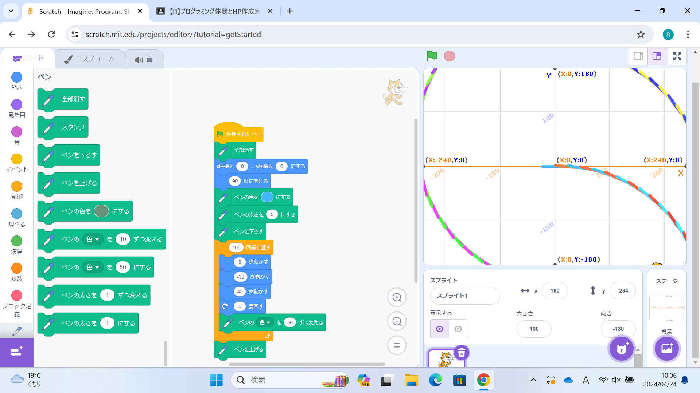
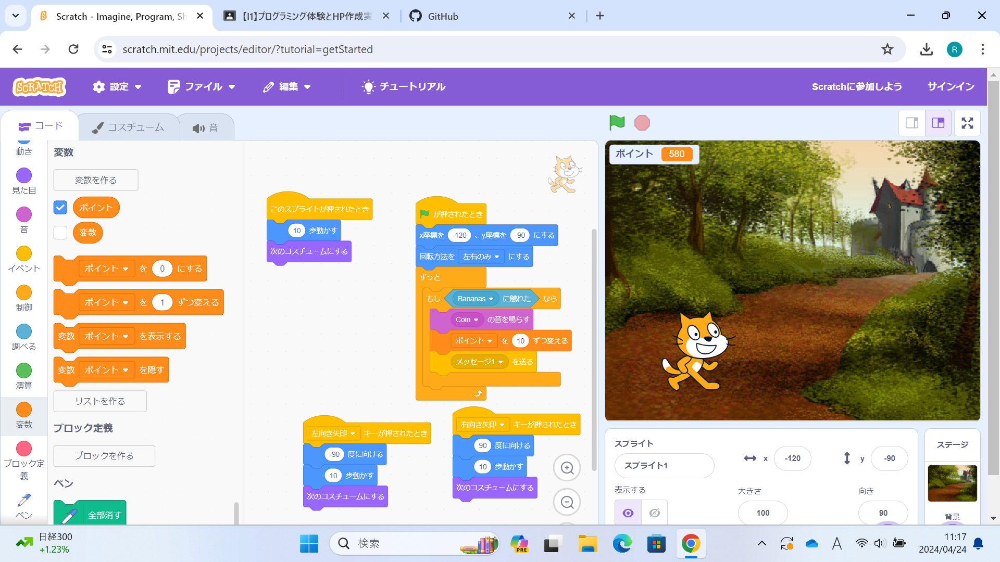

1週目のレポート ： 公大高専１年実習I-1
4a班12番 はまち
第1週目
1-1 サイエンスアート

1.内容
スクラッチを使って線を書くプログラムをつくった。
2.感想
スクラッチはゲームプログラミングのイメージが強かったので線が書けると知って驚いた。
1-2 ゲーム

1.内容
上から落ちてくるバナナを取ったらポイントが入るゲームをつくった
2.感想
ブロックを組み合わせてゲームを作っていくのが面白かった。
1-3 ホームページ作成
私のホームページ
1.内容
自分のホームページを作った
2.感想
ホームページは専門の人じゃないと作れないと思っていたので、とても簡単に作れて驚いた。